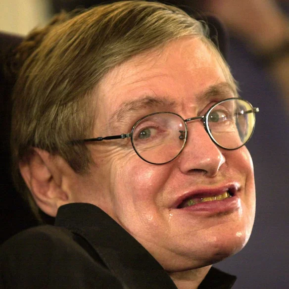

1942-2018
“My goal is simple. It is a complete understanding of the universe, why it is as it is and why it exists at all. ”
Stephen Hawking is regarded as one of the most brilliant theoretical physicists in history. His work on the origins and structure of the universe, from the Big Bang to black holes, revolutionized the field, while his best-selling books have appealed to readers who may not have Hawking's scientific background. Hawking died on March 14, 2018, at the age of 76. Stephen Hawking was seen by many as the world's smartest person, though he never revealed his IQ score. When asked about his IQ score by a New York Times reporter he replied, "I have no idea, people who boast about their IQ are losers," according to the news site The Atlantic. wikipedia